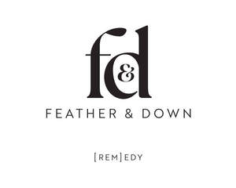

Trade Mark Journal No.2025/037 12 September 2025
UK00004258136 2 September 2025 (3,4)
Mark 1
Mark 2

- Class 3
- Bleaching preparations and other substances for laundry use; cleaning, polishing, scouring and abrasive preparations; room fragrances; home fragrance oils; air fragrancing preparations; scented oils; non-medicated toilet preparations; soaps; perfumery; essential oils; cosmetics; hair lotions; dentifrices; skin care preparations; skin creams; moisturisers; moisturising creams and lotions; lip balm; face wash; hair care preparations; shampoos; hair care lotions; hair conditioners; hair colorants; hair dyes; hair gel and hair mousse; hair sprays; hair oils; hair straightening preparations; hair curling preparations; hair styling spray; hair wax; personal deodorants; non-medicated bath preparations; preparations for the nails; nail polish remover, self-tanning preparations; self-tanning creams, lotions, sprays, mists and wipes; facial wipes impregnated with cosmetics, facial masks, facial creams, facial moisturisers, facial scrubs, body moisturisers, body scrubs; make up removal wipes impregnated with cosmetics; depilatory preparations; depilatory creams; depilatory wax; depilatory lotions; presentation and gift sets incorporating some or all of the aforesaid goods.
- Class 4
- Candles; fragranced and scented candles; wicks for candles; tealights; fragrant wax for use in wax warmers.
Creightons Plc
Representative: Murgitroyd & Company